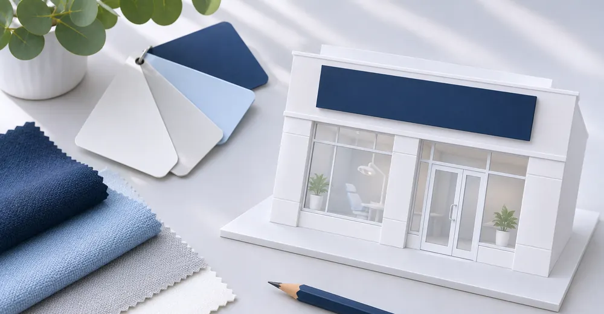

Бренд стоматологии: логотип, фирменный стиль и вывеска
Бренд стоматологии это не логотип с зубом. Это то, по чему пациент узнаёт клинику на улице, на картах и на сайте, и что он о ней помнит. Разбираем, из чего он складывается, как заказать логотип и вывеску и где проходит граница между вывеской и рекламой.

Из чего состоит бренд стоматологии
- Название. Его произносят, ищут и рекомендуют. О выборе читайте в статье о названии стоматологии.
- Позиционирование. Для кого клиника и чем отличается.
- Логотип и фирменный стиль. Цвета, шрифты, оформление документов, формы, навигации.
- Вывеска и вход. Первое, что видит человек из района.
- Сайт и карточки. То же оформление и те же слова в интернете.
- Впечатление от визита. Как встречают, как объясняют, как провожают. Его не нарисует дизайнер.
Как выглядит бренд у клиники, которой доверяют: одинаково везде. Название на вывеске совпадает с названием на картах, цвета сайта с цветами ресепшена, а тон сообщений с тем, как говорит администратор.
Логотип стоматологии
Картинки с логотипами стоматологий в поиске похожи друг на друга: зуб, улыбка, синий или бирюзовый цвет. Отличаться проще, чем кажется.
Что проверить в логотипе
- Читается в маленьком размере. Значок на картах и в мессенджере занимает несколько миллиметров.
- Работает в одном цвете. На печати, на форме, на табличке.
- Есть горизонтальный и компактный варианты. Для вывески и для круглого значка.
- Не похож на соседей. Откройте карты своего района и сравните.
- Название читается без подсказки. Сложный шрифт на вывеске не прочтут из машины.
Логотип для стоматологии: примеры решений
- Шрифтовой. Только название, набранное характерным шрифтом. Подходит клиникам с коротким названием.
- Буква или знак. Первая буква названия или простая фигура, которую легко запомнить.
- Образ. Не зуб, а то, что стоит за названием: линия, лист, дом, фамильный знак врача.
Права на логотип должны перейти к клинике по договору. Если название и знак важны для клиники, их регистрируют как товарный знак: это защищает от соседей с похожим именем.
Фирменный стиль для стоматологии
Фирменный стиль это правила, по которым оформляется всё остальное. Минимальный набор для клиники:
- два или три цвета и один или два шрифта;
- оформление вывески, таблички у входа и навигации внутри;
- форма сотрудников и бейджи;
- бланки: договор, план лечения, памятка после приёма;
- шаблоны для карточек на картах и соцсетей;
- оформление сайта.
Толстая книга правил небольшой клинике не нужна. Достаточно нескольких страниц, которыми действительно пользуются.
Вывеска стоматологии
Вывеска для стоматологии, наружная и видимая с дороги, для клиники в жилом районе работает каждый день: её видят тысячи людей, которым когда-нибудь понадобится врач.
| Вид | Когда подходит | На что обратить внимание |
|---|---|---|
| Объёмные буквы с подсветкой | Фасад с отдельным входом | Читаемость издалека и в темноте |
| Световой короб | Небольшой бюджет, ограниченное место | Выглядит проще, быстро выгорает |
| Панель-кронштейн | Вход не виден с тротуара | Показывает вход идущим вдоль дома |
| Неоновая вывеска | Интерьер, зона ресепшена, витрина | Для фасада подходит не везде: проверьте городские правила |
| Табличка у входа | Всегда | Название организации, режим работы: обязательные сведения для потребителей |
| Оформление окон | Первый этаж с витринами | Услуги и цены на окнах это уже реклама |
Вывеска или реклама: где граница
Вывеска, которая сообщает название, профиль и режим работы в месте нахождения клиники, обычно считается информацией для потребителей. Наружная реклама стоматологии начинается там, где на фасаде появляются услуги, цены, акции и призывы.
Для рекламы действуют требования закона:
- только услуги, которые есть в лицензии;
- предупреждение о противопоказаниях и необходимости консультации специалиста;
- никаких гарантий результата и слов «лучшая» без подтверждения;
- разрешение на рекламную конструкцию там, где оно требуется.
Вывеска и реклама стоматологии на одном фасаде должны быть согласованы между собой и с правилами города. Подробнее о требованиях к тексту в статье о законе о рекламе медицинских услуг.
Личный бренд стоматолога
В стоматологии часто идут «к врачу», а не «в клинику». Личный бренд стоматолога складывается из отзывов с его фамилией, профиля на ПроДокторов, страницы на сайте и того, что он сам рассказывает о своей работе. Клинике это выгодно, пока имя врача стоит рядом с её названием: на странице врача, в подписи к публикациям, в карточках на площадках.
С чего начать
- Проверьте, одинаково ли клиника названа на вывеске, на картах, на сайте и в документах.
- Сфотографируйте вход днём и вечером с другой стороны улицы: видно ли название.
- Соберите всё, что клиника печатает и публикует, на одном столе. Если это выглядит как материалы пяти разных организаций, начните с простых правил стиля.
Фирменный стиль клиники продолжаем на сайте: страницы услуг, врачи, цены и запись в одном оформлении: Сайт для стоматологии.